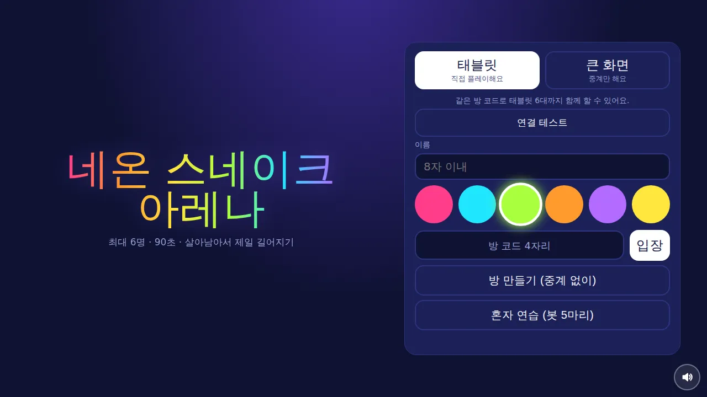
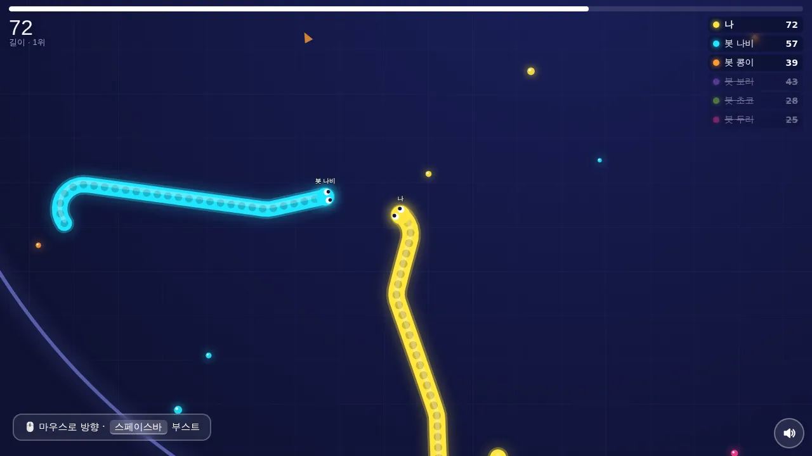
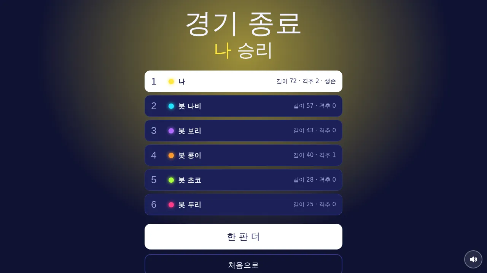

행사 진행용 · 최대 6명 · 큰 화면 중계
✈️ 액션 게임 · 무료 · 설치 없음
네온 스네이크 아레나
“살아남아서 제일 길어지기”
- 한 판 90초
- 최대 6명 대결
- 큰 화면 중계
- 혼자 연습 가능
회원가입 없이 누르면 바로 시작돼요
어떤 게임인가요?
캄캄한 경기장 위로 네온 뱀 여섯 마리가 빛을 내며 미끄러져요. 먹이를 먹을수록 몸이 길어지고, 길어질수록 순위판 위로 올라가요.
조심할 건 딱 하나. 내 머리가 다른 뱀의 몸통이나 경기장 벽에 닿으면 그대로 탈락이고, 몸은 반짝이는 먹이로 흩어져요. 그 먹이를 누가 먼저 주워 먹느냐가 역전의 기회예요.
50초가 지나면 경기장이 붉게 물들며 조금씩 좁아져요. 좁아진 경기장에서 마지막까지 버틴 뱀, 그중에서도 가장 긴 뱀이 승리해요.
이렇게 해요
- STEP 1
방 코드로 모여요
큰 화면이 「중계 방 만들기」를 누르면 방 코드와 QR이 떠요. 각자 이름과 색을 고르고 코드를 넣어 들어와요.
- STEP 2
끌어서 방향
화면 아무 데나 대고 끌면 그 방향으로 머리가 돌아가요. 왼쪽 아래 「부스트」를 누르는 동안 빨라지지만 몸이 조금씩 줄어요.
- STEP 3
90초 버티기
벽과 다른 뱀 몸통을 피해 끝까지 살아남으면 길이 순으로 순위가 정해져요.


✨ 알아 두면 좋아요
- 컴퓨터에서는 마우스 쪽으로 머리가 따라가고, 스페이스바를 누르는 동안 부스트가 돼요. 방향키나 WASD로도 움직일 수 있어요.
- 화면 가장자리의 작은 화살표는 화면 밖에 있는 다른 뱀이 어느 쪽에 있는지 알려 줘요.
- 다른 뱀의 머리 앞을 내 몸으로 막으면 격추! 격추한 수도 결과표에 나와요.
- 큰 화면(노트북·TV)은 게임에 끼지 않고 모든 뱀이 보이게 자동으로 확대·축소하며 중계해요. 주소 끝에 ?spec=1 을 붙이면 「큰 화면」이 미리 골라져 있어요.
- 혼자 해 보고 싶으면 「혼자 연습」으로 봇 다섯 마리와 겨룰 수 있어요.
이런 분께 추천해요
- 여럿이 모여 한 판에 붙는 게임을 찾는 분
- 짧고 긴장감 있는 대결을 좋아하는 분
- 행사장에서 큰 화면에 띄워 함께 보고 싶은 분
처음이라면 「혼자 연습 (봇 5마리)」로 조작을 익혀 보세요. 여럿이 할 때는 큰 화면 하나를 중계로 두면 구경하는 사람도 함께 즐거워요. 로비의 「연결 테스트」로 인터넷이 잘 되는지 먼저 확인할 수 있어요.
📱 어떤 기기에서 하면 좋을까요?
- 가장 좋아요태블릿 가로·세로 모두
화면이 커서 조작이 편해요. 가로로 두면 로비가 두 칸으로 바뀌어 한 화면에 다 보여요.
- 좋아요휴대폰 가로·세로 모두
화면 아무 데나 끌어서 조작해요. 처음 누를 때 전체 화면으로 바뀌어요.
- 좋아요컴퓨터·노트북 마우스·키보드
마우스로 방향, 스페이스바로 부스트. 큰 화면 중계용으로도 좋아요.
오른쪽 위 메뉴(⋮ 또는 ···)에서 「다른 브라우저로 열기」를 눌러 크롬이나 사파리로 열어 주세요. 앱 안에서는 전체 화면이 안 되고 저장이 풀릴 수 있어요.
🍎 아이폰·아이패드에서는
- ① 사파리로 열기
카카오톡이나 네이버 앱 안에서 열면 화면이 좁아요. 오른쪽 아래 메뉴에서 「다른 브라우저로 열기」나 사파리로 열어 주세요.
- ② 홈 화면에 추가하기
아이폰은 전체 화면 기능이 막혀 있어요. 공유 버튼(□↑) → 「홈 화면에 추가」로 열면 주소창 없이 꽉 찬 화면이 돼요. 아이패드는 누르면 전체 화면이 돼요.
- ③ 소리
무음 스위치가 켜져 있으면 소리가 나지 않아요. 배경음은 큰 화면과 혼자 연습에서만 나오고, 효과음은 오른쪽 아래 버튼으로 켜고 끌 수 있어요.
- ④ 인터넷
여럿이 할 때는 모든 기기가 인터넷(와이파이 또는 휴대폰 데이터)에 연결되어 있어야 해요. 쓰는 데이터는 아주 적어요.
🤖 갤럭시 등 안드로이드에서는
크롬이나 삼성 인터넷으로 열면 돼요. 처음 누를 때 전체 화면으로 바뀌고, 빠져나가도 다음에 누르면 다시 켜져요.
▶ 바로 해 보기
설치도, 회원가입도 필요 없어요.
네온 스네이크 시작하기game.edoori.co.kr/neon-snake/